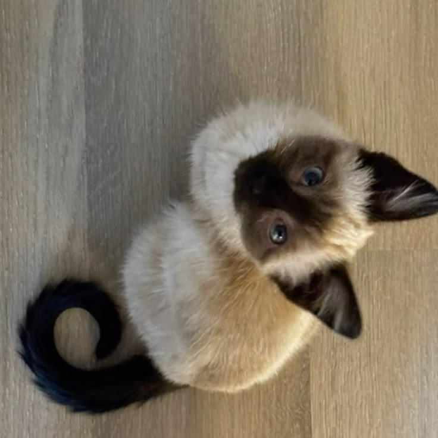
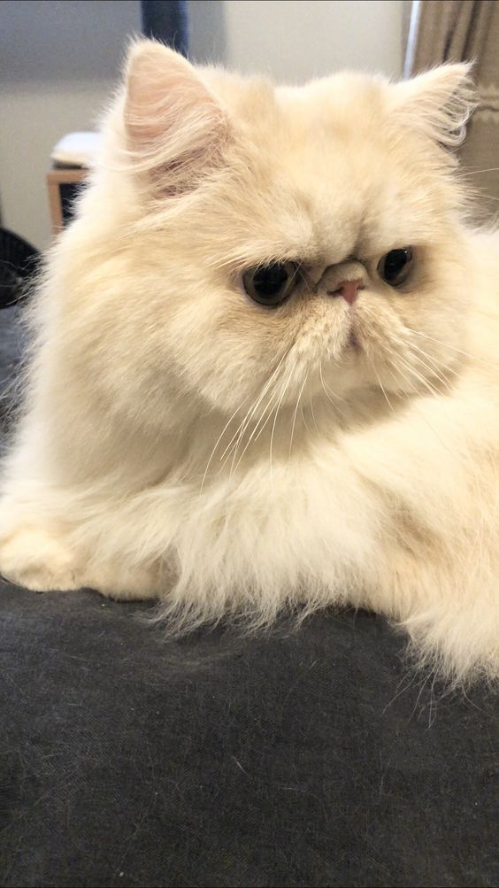
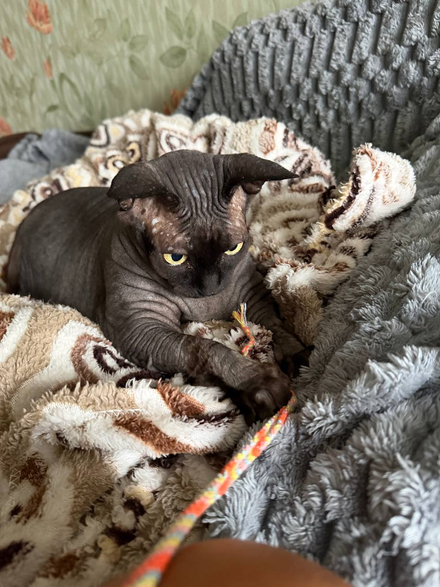

Велика порода
Мейн-кун
Найбільша домашня порода: до 1,2 м завдовжки разом із хвостом. Добродушні велетні, яких називають «собаками серед котів».
Шість котів, у кожного з яких свій характер і своя краса.
Найбільша домашня порода: до 1,2 м завдовжки разом із хвостом. Добродушні велетні, яких називають «собаками серед котів».

Кремове тіло, темні «маска» та лапи. Забарвлення залежить від температури: на холодних ділянках тіла шерсть темніє.

Плями як у леопарда та шерсть, що переливається золотом на світлі. Результат схрещування з диким бенгальським котом.

Спокійна кішка з пухнастою шубою та круглою мордочкою. Улюблениця аристократів уже кілька століть.

Шкіра тепла на дотик, наче замша. Сфінкси дуже товариські й люблять зігріватися поруч із людьми.

Щільна шерсть, круглі щоки та незворушний характер. Найвідоміше забарвлення — сіро-блакитне.